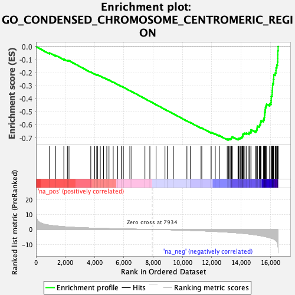

| | | Dataset | DE_genes2 |
| Phenotype | NoPhenotypeAvailable |
| Upregulated in class | na_neg |
| GeneSet | GO_CONDENSED_CHROMOSOME_CENTROMERIC_REGION |
| Enrichment Score (ES) | -0.7161138 |
| Normalized Enrichment Score (NES) | -2.2837372 |
| Nominal p-value | 0.0 |
| FDR q-value | 0.0 |
| FWER p-Value | 0.0 |
Table: GSEA Results Summary

Fig 1: Enrichment plot: GO_CONDENSED_CHROMOSOME_CENTROMERIC_REGION
Profile of the Running ES Score & Positions of GeneSet Members on the Rank Ordered List
| PROBE | GENE SYMBOL | GENE_TITLE | RANK IN GENE LIST | RANK METRIC SCORE | RUNNING ES | CORE ENRICHMENT | | 1 | MAD1L1 | | | 922 | 2.842 | -0.0481 | No |
| 2 | DCTN5 | | | 1352 | 2.316 | -0.0677 | No |
| 3 | RANGAP1 | | | 1901 | 1.838 | -0.0959 | No |
| 4 | TP53BP1 | | | 2146 | 1.651 | -0.1061 | No |
| 5 | CENPT | | | 2253 | 1.586 | -0.1080 | No |
| 6 | PHF2 | | | 3740 | 0.916 | -0.1959 | No |
| 7 | NDE1 | | | 4008 | 0.835 | -0.2098 | No |
| 8 | CLASP1 | | | 4148 | 0.794 | -0.2160 | No |
| 9 | DCTN3 | | | 4199 | 0.779 | -0.2169 | No |
| 10 | RASSF2 | | | 4390 | 0.722 | -0.2264 | No |
| 11 | MEAF6 | | | 4612 | 0.659 | -0.2380 | No |
| 12 | HSF1 | | | 4834 | 0.610 | -0.2497 | No |
| 13 | LRWD1 | | | 4983 | 0.574 | -0.2571 | No |
| 14 | AURKC | | | 5270 | 0.499 | -0.2731 | No |
| 15 | PMF1 | | | 5580 | 0.431 | -0.2907 | No |
| 16 | NDEL1 | | | 5819 | 0.381 | -0.3041 | No |
| 17 | ZNF276 | | | 5964 | 0.353 | -0.3119 | No |
| 18 | DYNC1I1 | | | 6407 | 0.262 | -0.3380 | No |
| 19 | CEBPB | | | 6545 | 0.234 | -0.3457 | No |
| 20 | CENPW | | | 7436 | 0.075 | -0.3997 | No |
| 21 | REC8 | | | 7773 | 0.021 | -0.4201 | No |
| 22 | CENPB | | | 8197 | -0.041 | -0.4457 | No |
| 23 | CENPV | | | 8805 | -0.152 | -0.4822 | No |
| 24 | ZNF207 | | | 8957 | -0.183 | -0.4909 | No |
| 25 | SS18L1 | | | 9378 | -0.284 | -0.5157 | No |
| 26 | CSNK1A1 | | | 10302 | -0.555 | -0.5703 | No |
| 27 | NUP85 | | | 10541 | -0.640 | -0.5830 | No |
| 28 | CFDP1 | | | 11263 | -0.909 | -0.6243 | No |
| 29 | ANAPC16 | | | 11318 | -0.934 | -0.6249 | No |
| 30 | PINX1 | | | 11950 | -1.196 | -0.6600 | No |
| 31 | DYNC1LI1 | | | 11956 | -1.198 | -0.6569 | No |
| 32 | DCTN6 | | | 12237 | -1.343 | -0.6702 | No |
| 33 | KANSL1 | | | 12510 | -1.477 | -0.6825 | No |
| 34 | NSL1 | | | 13055 | -1.802 | -0.7106 | No |
| 35 | CENPM | | | 13147 | -1.858 | -0.7109 | Yes |
| 36 | BOD1 | | | 13214 | -1.899 | -0.7095 | Yes |
| 37 | DYNLT3 | | | 13291 | -1.949 | -0.7087 | Yes |
| 38 | SMC1A | | | 13325 | -1.971 | -0.7051 | Yes |
| 39 | SYCP2L | | | 13346 | -1.986 | -0.7007 | Yes |
| 40 | CENPO | | | 13365 | -2.007 | -0.6962 | Yes |
| 41 | CDT1 | | | 13400 | -2.026 | -0.6925 | Yes |
| 42 | NCAPD2 | | | 13788 | -2.321 | -0.7095 | Yes |
| 43 | CKAP5 | | | 13831 | -2.355 | -0.7054 | Yes |
| 44 | DSN1 | | | 13907 | -2.424 | -0.7032 | Yes |
| 45 | INCENP | | | 13962 | -2.468 | -0.6995 | Yes |
| 46 | NEK2 | | | 14051 | -2.552 | -0.6977 | Yes |
| 47 | NUP37 | | | 14072 | -2.573 | -0.6916 | Yes |
| 48 | CLASP2 | | | 14107 | -2.602 | -0.6864 | Yes |
| 49 | PPP1CC | | | 14114 | -2.608 | -0.6794 | Yes |
| 50 | NCAPD3 | | | 14122 | -2.615 | -0.6724 | Yes |
| 51 | NUP43 | | | 14154 | -2.649 | -0.6668 | Yes |
| 52 | KNSTRN | | | 14258 | -2.748 | -0.6654 | Yes |
| 53 | NUP133 | | | 14373 | -2.856 | -0.6642 | Yes |
| 54 | CENPU | | | 14542 | -3.039 | -0.6659 | Yes |
| 55 | BUB3 | | | 14549 | -3.043 | -0.6577 | Yes |
| 56 | MIS12 | | | 14669 | -3.210 | -0.6559 | Yes |
| 57 | ZW10 | | | 14679 | -3.216 | -0.6473 | Yes |
| 58 | FBXO28 | | | 14681 | -3.219 | -0.6383 | Yes |
| 59 | NUP107 | | | 15003 | -3.655 | -0.6476 | Yes |
| 60 | HNRNPU | | | 15058 | -3.735 | -0.6403 | Yes |
| 61 | SPC24 | | | 15084 | -3.765 | -0.6312 | Yes |
| 62 | CENPN | | | 15099 | -3.785 | -0.6214 | Yes |
| 63 | ZWINT | | | 15107 | -3.798 | -0.6111 | Yes |
| 64 | ITGB3BP | | | 15248 | -4.001 | -0.6083 | Yes |
| 65 | SEH1L | | | 15275 | -4.073 | -0.5984 | Yes |
| 66 | CHAMP1 | | | 15322 | -4.154 | -0.5895 | Yes |
| 67 | SPAG5 | | | 15339 | -4.181 | -0.5787 | Yes |
| 68 | BOD1L1 | | | 15365 | -4.231 | -0.5683 | Yes |
| 69 | CBX3 | | | 15520 | -4.527 | -0.5649 | Yes |
| 70 | SKA2 | | | 15559 | -4.611 | -0.5542 | Yes |
| 71 | ZWILCH | | | 15582 | -4.659 | -0.5424 | Yes |
| 72 | ATRX | | | 15599 | -4.719 | -0.5301 | Yes |
| 73 | AURKA | | | 15607 | -4.737 | -0.5171 | Yes |
| 74 | PLK1 | | | 15623 | -4.763 | -0.5046 | Yes |
| 75 | CCNB1 | | | 15643 | -4.796 | -0.4923 | Yes |
| 76 | CENPC | | | 15651 | -4.807 | -0.4791 | Yes |
| 77 | KNTC1 | | | 15665 | -4.846 | -0.4663 | Yes |
| 78 | NUDCD2 | | | 15699 | -4.910 | -0.4544 | Yes |
| 79 | BIRC5 | | | 15741 | -4.998 | -0.4428 | Yes |
| 80 | AHCTF1 | | | 15945 | -5.493 | -0.4397 | Yes |
| 81 | MAD2L1 | | | 16043 | -5.805 | -0.4292 | Yes |
| 82 | GPATCH11 | | | 16050 | -5.815 | -0.4132 | Yes |
| 83 | ORC2 | | | 16058 | -5.843 | -0.3971 | Yes |
| 84 | KIF2C | | | 16061 | -5.848 | -0.3808 | Yes |
| 85 | SKA3 | | | 16116 | -5.989 | -0.3672 | Yes |
| 86 | AURKB | | | 16120 | -6.007 | -0.3504 | Yes |
| 87 | SPC25 | | | 16131 | -6.050 | -0.3339 | Yes |
| 88 | BUB1 | | | 16142 | -6.084 | -0.3174 | Yes |
| 89 | SKA1 | | | 16146 | -6.104 | -0.3004 | Yes |
| 90 | ERCC6L | | | 16159 | -6.148 | -0.2838 | Yes |
| 91 | HJURP | | | 16210 | -6.380 | -0.2688 | Yes |
| 92 | CENPH | | | 16211 | -6.387 | -0.2508 | Yes |
| 93 | SPDL1 | | | 16232 | -6.486 | -0.2337 | Yes |
| 94 | MIS18BP1 | | | 16234 | -6.494 | -0.2155 | Yes |
| 95 | BUB1B | | | 16335 | -7.102 | -0.2015 | Yes |
| 96 | NUF2 | | | 16382 | -7.475 | -0.1832 | Yes |
| 97 | PHF6 | | | 16388 | -7.593 | -0.1621 | Yes |
| 98 | CENPA | | | 16438 | -8.139 | -0.1422 | Yes |
| 99 | CENPK | | | 16485 | -9.298 | -0.1187 | Yes |
| 100 | CENPE | | | 16501 | -10.010 | -0.0914 | Yes |
| 101 | NCAPG | | | 16504 | -10.079 | -0.0631 | Yes |
| 102 | CENPF | | | 16507 | -10.688 | -0.0331 | Yes |
| 103 | NDC80 | | | 16527 | -12.233 | 0.0002 | Yes |
Table: GSEA details [plain text format]
Fig 2: GO_CONDENSED_CHROMOSOME_CENTROMERIC_REGION: Random ES distribution
Gene set null distribution of ES for GO_CONDENSED_CHROMOSOME_CENTROMERIC_REGION